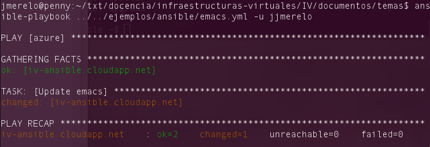

Infraestructura como servicio
Objetivos
- Diseñar, construir y analizar las prestaciones de un centro de
proceso de datos virtual.
- Documentar y mantener una plataforma virtual.
- Realizar tareas de administración en infraestructura virtual.
- Aprender lenguajes de configuración usados en infraestructuras virtuales.
- Saber cómo aplicarlos en un caso determinado.
- Conocer los sistemas de gestión de la configuración, provisionamiento y monitorizació más usados hoy en día.
Introducción
Las infraestructuras virtuales se gestionan a través de una serie de herramientas denominadas, en general, gestores de configuración. Vagrant es uno de ellos, pero también hay otros: Chef, Salt y Puppet, por ejemplo. Todos son libres, pero tienen características específicas que hay que tener en cuenta a la hora de elegir uno u otro. En el caso específico de sistemas operativos se trata de gestionar automáticamente todas las tareas de configuración de un sistema, automatizando la edición de ficheros de configuración, instalación de software y configuración del mismo, creación de usuarios y autenticación, de forma que se pueda hacer de forma automática y masiva.
A continuación veremos diferentes ejemplos de sistemas de
configuración, empezando por Chef. En
temas anteriores hemos visto Juju, un ejemplo de
sistema de configuración también, aunque específico de Ubuntu.
Usando Chef para provisionamiento
Chef es una herramienta que, en
general, se usa en un servidor que se encarga no sólo de gestionar la
configuración, sino también las versiones. Empezar a usarlo
es complicado.
Sin embargo, como
introducción a la gestión de configuraciones se puede usar
chef-solo, una versión
aislada que permite trabajar en una máquina desde la misma y que, por
tanto, se puede usar como introducción y para probar
configuraciones.
Hay varios tutoriales que te permiten, con relativa rapidez, comenzar a trabajar con Chef-solo en un servidor; este te proporciona una serie de ficheros que puedes usar y este otro es más directo, dando una serie de órdenes. En todo caso, se trata básicamente tener acceso a un servidor o máquina virtual, instalar una serie de aplicaciones en él y ejecutarlas sobre un fichero de configuración
En una máquina tipo ubuntu, hay que comenzar instalando Ruby y Ruby Gems, el gestor de librerías
sudo apt-get install ruby1.9.1 ruby1.9.1-dev rubygems
chef se distribuye como una gema, por lo que se puede instalar
siempre como
sudo gem install ohai chef
ohai acompaña a chef y es usado
desde el mismo para comprobar características del nodo antes de
ejecutar cualquier receta.
Una forma más rápida de instalar Chef es descargarlo directamente desde la página web:
curl -L https://www.opscode.com/chef/install.sh | bash
La última tendrá que ser sudo bash en caso de que se quiera instalar como administrador (que será lo normal).
Una receta de Chef
consiste en crear una serie de ficheros:
una lista de ejecución que especifica qué es lo que se va a
configurar; esta lista se incluye en un fichero node.json,
o recetario (cookbook) que incluye una serie de recetas que
configuran, efectivamente, los recursos y, finalmente, un fichero de
configuración que dice dónde están los dos ficheros anteriores y
cualquier otro recursos que haga falta. Estos últimos dos ficheros
están escritos en Ruby.
Vamos a empezar a escribir una recetilla del Chef. Generalmente,
escribir una receta es algo más complicado,
pero comenzaremos por una receta muy simple que instale el
imprescindible emacs y le asigne un nombre al nodo. Creamos el
directorio chef en algún sitio conveniente y dentro de ese
directorio irán diferentes ficheros.
El fichero que contendrá efectivamente la receta se
llamará default.rb
package 'emacs'
directory '/home/jmerelo/Documentos'
file "/home/jmerelo/Documentos/LEEME" do
owner "jmerelo"
group "jmerelo"
mode 00544
action :create
content "Directorio para documentos diversos"
end
El nombre del fichero indica que se trata de la receta por omisión, pero el nombre de la receta viene determinado por el directorio en el que se meta, que podemos crear de un tirón con
mkdir -p chef/cookbooks/emacs/recipes
Este fichero tiene tres partes: instala el paquete emacs, crea un
directorio para documentos y dentro de él un fichero que explica, por
si hubiera duda, de qué se trata. Evidentemente, tanto caminos como
nombres de usuario se deben cambiar a los correspondientes en la
máquina virtual que estemos configurando.
El siguiente fichero, node.json,
incluirá una referencia a esta receta
{
"run_list": [ "recipe[emacs]" ]
}
Este fichero hace referencia a un recetario, emacs y dado que no se
especifica nada más se ejecutará la receta por defecto.
Finalmente, el fichero de configuración solo.rb incluirá referencias a ambos.
file_cache_path "/home/jmerelo/chef"
cookbook_path "/home/jmerelo/chef/cookbooks"
json_attribs "/home/jmerelo/chef/node.json"
Una vez más, cambiando los caminos por los que correspondan. Para ejecutarlo,
sudo chef-solo -c chef/solo.rb
(si se ejecuta desde el directorio raíz). Esta orden producirá una serie de mensajes para cada una de las órdenes y, si todo va bien, tendremos este útil editor instalado.
Para usar chef-solo hay simplemente que instalar unos cuantos
programas, pero en gran parte ya está automatizado:
aquí explica como usarlo en Ubuntu 12.04,
por ejemplo basándose en
este Gist (programas cortos en GitHug)
que instala todas las herramientas necesarias para comenzar a ejecutar
chef.
Normalmente estas recetas van a estar bajo control de un sistema de gestión de fuentes; de esta forma se pueden probar diferentes configuraciones, crear nuevas versiones de la misma pero, sobre todo, tener claro en cada momento qué configuración es la que se está ejecutando en producción, que será habitualmente la que esté en una rama designada de la misma.
Otros sistemas de gestión de configuración
Las principales alternativas a Chef son Ansible, Salt y Puppet. Todos ellos se comparan en este artículo, aunque los principales contendientes son Puppet y Chef, sin que ninguno de los dos sea perfecto.
De todas ellas, vamos a ver Ansible que parece ser uno de los que se está desarrollando con más intensidad últimamente. Ansible es sistema de gestión remota de configuración que permite gestionar simultáneamente miles de sistemas diferenets. Está basado en YAML para la descripción de los sistemas y escrito en Python.
Se instala como un módulo de Python, usando por ejemplo la utilidad de
instalación de módulos pip (que habrá que instalar si no se tiene)
sudo pip install paramiko PyYAML jinja2 httplib2 ansible
El resto de las utilidades son también necesarias y en realidad se instalan automáticamente al instalar ansible. Estas utilidades se tienen que instalar en el anfitrión, no hace falta instalarlas en el invitado, que lo único que necesitará, en principio, es tener activada la conexión por ssh y tener una cuenta válida y forma válida de acceder a ella.
Cada máquina que se añada al control de Ansible se tiene que añadir a un fichero, llamado inventario, que contiene las diferentes máquinas controladas por el mismo. Por ejemplo
$ echo "ansible-iv.cloudapp.net" > ~/ansible_hosts
se puede ejecutar desde el shell para meter (echo) una cadena con
una dirección (en este caso, una máquina virtual de Azure) en el
fichero ansible_hosts situado en mi directorio raíz. El lugar de ese
fichero es arbitrario, por lo que habrá que avisar a Ansible donde
está usando una variable de entorno:
export ANSIBLE_HOSTS=~/ansible_hosts
Y, con un nodo, ya se puede comprobar si Ansible funciona con
$ ansible all -u jjmerelo -m ping
Esta orden hace un ping, es decir, simplemente comprueba si la
máquina es accesible desde la máquina local. -u incluye el nombre
del usuario (si es diferente del de la máquina local); habrá que
añadir --ask-pass si no se ha configurado la máquina remota para
poder acceder a ella sin clave.
De forma básica, lo que hace Ansible es simplemente ejecutar comandos de forma remota y simultáneamente. Para hacerlo, podemos usar el inventario para agrupar los servidores, por ejemplo
[azure]
iv-ansible.cloudapp.net
crearía un grupo azure (con un solo ordenador), en el cual podemos
ejecutar comandos de forma remota
$ ansible azure -u jjmerelo -a df
nos mostraría en todas las máqunias de azure la organización del
sistema de ficheros (que es lo que hace el comando df). Una vez más,
-u es opcional.
Esta orden usa un módulo de ansible y se puede ejecutar también de esta forma:
$ ansible azure -m shell ls
haciendo uso del módulo shell. Hay muchos
más módulos a los que se le
pueden enviar comandos del tipo "variable = valor". Por ejemplo, se
puede trabajar con servidores web o
copiar ficheros
o
incluso desplegar aplicaciones directamente usando el módulo git
Finalmente, el concepto similar a las recetas de Chef en Ansible son los playbooks, ficheros en YAML que le dicen a la máquina virtual qué es lo que hay que instalar en tareas, de la forma siguiente
---
- hosts: azure
sudo: yes
tasks:
- name: Update emacs
apt: pkg=emacs state=present
Esto se guarda en un fichero y se le llama, por ejemplo, emacs.yml, y se ejecuta con
ansible-playbook ../../ejemplos/ansible/emacs.yml
(recordando siempre el temita del nombre de usuario), lo que dará, si todo ha ido bien, un resultado como el siguiente

En el fichero YAML lo que se está expresando es un array asociativo
con las claves hosts, sudo y tasks. En el primero ponemos el
bloque de servidores en el que vamos a actuar, en el segundo si hace
falta hacer sudo o no y en el tercero las tareas que vamos a ejecutar,
en este caso una sola. El apartado de tareas es un vector de hashes,
cada uno de los cuales tiene en name el nombre de la tarea, a título
informativo y en las otras claves lo que se va a hacer; apt indicará
que hay que instalar un paquete (pkg) llamado emacs y que hay que
comprobar si está presente o no (state). El que se trabaje con
estados y no de forma imperativa hace que los playbooks sean
idempotentes, es decir, si se ejecutan varias veces darán el mismo
resultado que si se ejecutan una sola vez.
Orquestación de máquinas virtuales
A un nivel superior al provisionamiento de máquinas virtuales está la configuración, orquestación y gestión de las mismas, herramientas como Vagrant ayudan a hacerlo, aunque también Puppet e incluso Juju pueden hacer muchas de las funciones de Vagrant. Algunas alternativas son Vortex
La ventaja de Vagrant es que permite gestionar el ciclo de vida completo de una máquina virtual, desde la creación hasta su destrucción pasando por el provisionamiento y la monitorización o conexión con la misma. Además, permite trabajar con todo tipo de hipervisores y provisionadores tales como los que hemos visto anteriormente.
Con Vagrant te puedes descargar directamente una máquina configurada de esta lista. Por ejemplo,
vagrant box add centos65 https://github.com/2creatives/vagrant-centos/releases/download/v6.5.1/centos65-x86_64-20131205.box
El formato determinará en qué tipo de hipervisor se puede ejecutar; en
general, Vagrant usa VirtualBox, y los .box se ejecutan precisamente
en ese formato. Otras imágenes están configuradas para trabajar con
VMWare, pero son las menos. A continuación,
vagrant init centos65
crea un fichero Vagrantfile (y así te lo dice) que permite trabajar
y llevar a cabo cualquier configuración adicional. Una vez hecho eso
ya podemos inicializar la máquina y trabajar con ella (pero antes voy
a apagar la máquina Azure que tengo ejecutándose desde que empecé a
contar lo anterior)
vagrant up
y se puede empezar a trabajar en ella con
vagrant ssh
Una vez creada la máquina virtual se puede entrar en ella y configurarla e instalar todo lo necesario. Pero, por supuesto, sabiendo lo que sabemos sobre provisionamiento, Vagrant permite provisionarla de muchas maneras diferentes. En general, Vagrant usará opciones de configuración diferente dependiendo del provisionador, subirá un fichero a un directorio temporal del mismo y lo ejecutará (tras ejecutar todo lo necesario para el mismo).
La provisión tiene lugar cuando se alza una máquina virtual (con
vagrant up) o bien explícitamente haciendo vagrant provision. En
cualquier caso se lee del Vagrantfile y se llevan a cabo las acciones
especificadas en el fichero de configuración.
En general, trabajar con un provisionador requiere especificar de cuál
se trata y luego dar una serie de órdenes específicas. Comenzaremos
por el
shell, que
es el más simple y, en realidad, equivale a entrar en la máquina y dar
las órdenes a mano. Instalaremos, como hemos hecho en otras ocasiones,
el utilísimo editor emacsusando este
Vagrantfile:
VAGRANTFILE_API_VERSION = "2"
Vagrant.configure(VAGRANTFILE_API_VERSION) do |config|
config.vm.box = "centos65"
config.vm.provision "shell",
inline: "yum install -y emacs"
end
Recordemos que se trata de un programa en Ruby en el cual configuramos
la máquina virtual. La 4ª línea indica el nombre de la máquina con la
que vamos a trabajar (que puede ser la usada en el caso anterior);
recordemos también que, por omisión, se trabaja con VirtualBox (si se
hiciera con algún otro tipo de hipervisor habría que usar el plugin
correspondiente e inicializar la máquina de alguna otra forma). La
parte en la que efectivamente se hace la provisión va justamente a
continuación. La orden config.vm.provision indica que se va a usar
el sistema de provisión del shell, es decir, órdenes de la línea de
comandos; se le pasa un hash en Ruby (variable: valor, tal como en
javascript, separados por comas) en el que la clave inline indica el
comando que se va a ejecutar, en este caso yum, el programa para
instalar paquetes en CentOS, y al que se le indica -y para que
conteste Yes a todas las preguntas sobre la instalación.
Este Vagrantfile no necesita nada especial para ejecutarse: se le
llama directamente cuando se ejecuta vagrant up o explícitamente
cuando se llama con vagrant provision. Lo único que hará es instalar
este programa bajándose todas sus dependencias (y tardará un rato).
El poblema con los guiones de shell (y no sé por qué diablos pongo guiones si pongo shell, podía poner scripts de shell directametne y todo el mundo me entendería, o guiones de la concha y nadie me entendería) es que son específicos de una máquina. Por eso Vagrant permite muchas otras formas de configuración, incluyendo casi todos los sistemas de provisionamiento populares (Chef, Puppet, Ansible, Salt) y otros sistemas com Docker, que también hemos visto. La ventaja de estos sistemas de más alto nivel es que permiten trabajar independientemente del sistema operativo. Cada uno de ellos tendrá sus opciones específicas, pero veamos cómo se haría lo anterior usando el provisionador chef-solo.
Para empezar, hay que provisionar la máquina virtual para que funcione con chef-solo y hay que hacerlo desde shell o Ansible; este ejemplo que usa este fichero shell puede provisionar, por ejemplo, una máquina CentOS.
Una vez preinstalado chef (lo que también podíamos haber hecho con
una máquina que ya lo tuviera instalado, de las que hay muchas en vagrantbox.esgit co
y de hecho es la mejor opción porque chef-solo no se puede instalar en
la versión 6.5 de Centos fácilmente por no tener una versión
actualizada de Ruby)
incluimos en el Vagrantfile. las órdenes para usarlo en
este Vagrantfile
VAGRANTFILE_API_VERSION = "2"
Vagrant.configure(VAGRANTFILE_API_VERSION) do |config|
config.vm.box = "centos63"
config.vm.provision "chef_solo" do |chef|
chef.add_recipe "emacs"
end
end
Este fichero usa un bloque de Ruby para pasarle variables y
simplemente declara que se va a usar la receta emacs, que
previamente tendremos que haber creado en un subdirectorio cookbooks
que descienda exactamente del mismo directorio y que contenga
simplemente package 'emacs' que tendrá que estar en un fichero
cookbooks/emacs/recipes/default.rb
Con todo esto se puede configurar emacs. Pero, la verdad, seguro que es más fácil hacerlo en Ansible y/o en otro sistema operativo que no sea CentOS porque yo, por lo pronto, no he logrado instalar chef-solo en ninguna de las máquinas pre-configuradas de VagrantBoxes.
Desde Vagrant se puede crear también una
caja base con lo
mínimo necesario para poder funcionar, incluyendo el soporte para ssh
y provisionadores como Chef o Puppet. Se puede crear directamente en
VirtualBox y usar
vagrant package
para empaquetarla y usarla para su consumo posterior.
A donde ir desde aquí
Este es el último tema del curso, pero a partir de aquí se puede seguir aprendiendo sobre devops en el blog o en IBM. Libros como DevOps for Developers pueden ser también de ayuda.